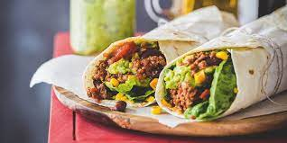

Burritos

Ingredients (Makes 4 Burritos)
- 4 large flour tortillas
- 1 pound ground beef or your choice of protein (chicken, pork, tofu)
- 1 tablespoon olive oil
- 1 small onion, finely chopped
- 2 cloves garlic, minced
- 1 packet taco seasoning mix
- 1 can (15 ounces) black beans, drained and rinsed
- 1 cup cooked rice
- 1 cup shredded cheese (cheddar, Monterey Jack, or Mexican blend)
- 1 cup salsa
- 1 cup shredded lettuce
- 1 avocado, sliced
- Sour cream (for serving)
- Fresh cilantro, chopped (for garnish)
Preparation
COOK THE FILLING AND ASSEMBLE BURRITOS
Step 1
- Heat olive oil in a skillet over medium heat. Add chopped onions and cook until softened.
Step 2
- Add minced garlic and cook for an additional 30 seconds until fragrant.
Step 3
- Add ground beef (or your choice of protein) to the skillet and cook until browned. Drain excess fat if necessary.
Step 4
- Stir in the taco seasoning mix and follow the package instructions for seasoning the meat.
Step 5
- Add black beans to the skillet and cook until heated through.
Step 6
- Warm the flour tortillas in a dry skillet or microwave according to package instructions.
Step 7
- Assemble the burritos by placing a portion of the seasoned meat and beans mixture onto each tortilla.
Step 8
- Top with cooked rice, shredded cheese, salsa, shredded lettuce, sliced avocado, sour cream, and chopped cilantro.
Step 9
- Fold in the sides of the tortilla and then roll it up tightly to form the burrito.
Step 10
- Serve the burritos immediately and enjoy!